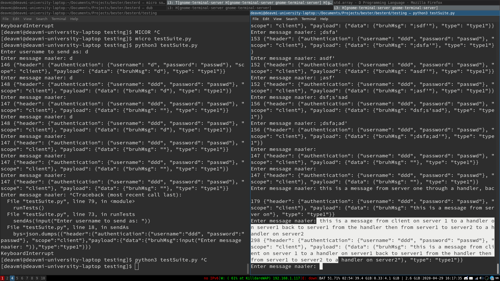
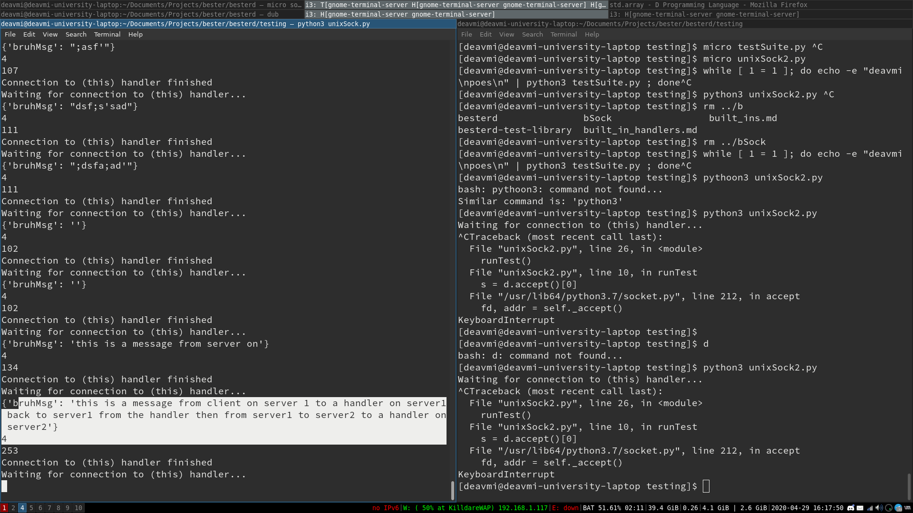
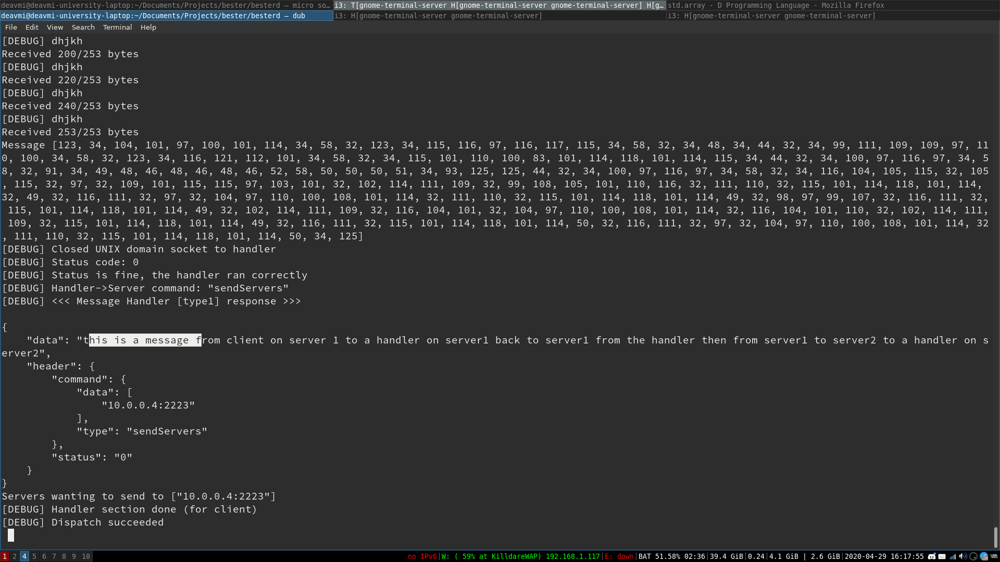
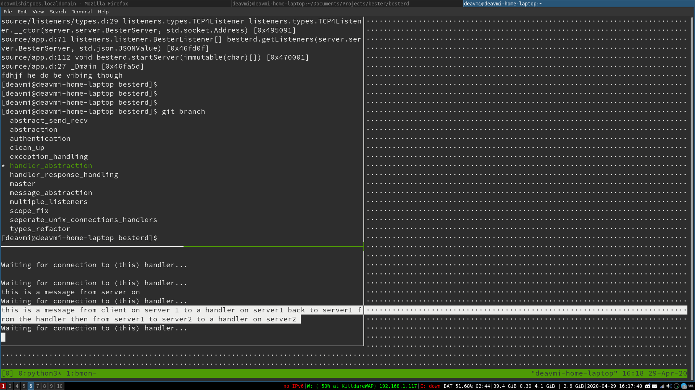
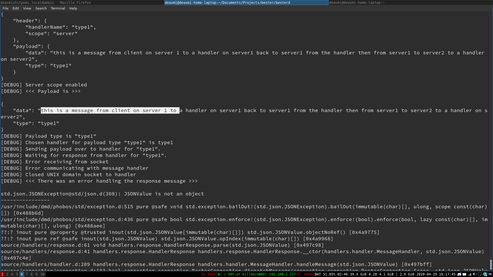

Working message handlers
The whole flow of client to server, server to handler, handler
to server and server to client (as described in the
introduction to Bester post) has
been implemented and tests exist to test that functionality out.
You can now have a client
T send a message of type
S
to the server
J and the handler for
S-type
messages will handle the message.
S will do what it
needs to and then, over a UNIX domain socket, transfer its
response back to the server,
J. Another little change to
mention is that upon connecting to the handler we open a new
connection to it each time, instead of the previous mechanism
that connected on startup and used that socket for
all
messages of type
S. Anywho, when server
J has
gotten a response back from
S it will then see what the
command is, these are sendHandler, sendServers and sendClient.
For what I am speaking about it is sendClient we are interested
in. The whole flow as described in the beginning works and the
server will check the list of provided clients (from the message
handler's response message) and send the payload of the message
handler to each of those users.
Early working scope "server" (server-to-server)
A small little mention (rather big in my opinion) is that we now
have a working server-to-server handling mechanism in response.d
(which handles sendClients, sendServers and (soon) sendHandler),
in fact the images you see later are of that all working (which
also implies a working message handler system, as described
above).
Exceptions everywhere and code clean up
It is worth the mention that exception handling is making its
way into the codebase. For example, a failure to send to on of
the clients in the scenario mentioned above will not break the
whole response-handling mechanism but rather skip to the next
client and attempt sending to it. It is quite shoddy right now
but that is just to have it in a non-breakable state. There will
come a time, I think in probably a month's time whereby code
clean up can be done.
Speaking of code clean up, a lot has been done to abstract and
modularise everything. Most message handling code is now part of
the "handlers" package and the entry point of through a
MessageHandler object. Things will continue to follow this OOP
design pattern till I am satisfied with the code hiding such
that each module only calls external functions in those other
mdules and the code in each module is solely related to the
module itself - not another module.
Some photos of it working
To wrap up this post I think sharing the latest screenshots of
it working would be a good idea.

Client A -> Server B
What you see above is a client A connected to a server
B, and the right-hand side pane is client A
authenticated with
the server and sending a message to it (of type "type1"). The
output of the constructed is then printed below it.

Server B
-> Handler C
What you see here is handler C receiving the message
that was sent from client A to the server B.
It
has now been dispatched to the message handler C
which has now printed out that received message.

Server B -> Handler C ->
Server B
What you now see is the response that the message
handler
C had sent to Server
B when
server
B sent client
A's
payload to the server. The command
here is clearly (near the bottom of the terminal)
stated to be sendServers and
it contains one server to send to,
namely "10.0.0.4" on port "2223".

Server B -> Server D -> Handler E
What has happened now is that the sendServers command
from server C has come into affect and
transferred the
response payload form handler C to server D,
the received payload has the "scope" field set to
"server" and hence
no authentication needs to take place. The same
handling steps however do occur, therefore the payload
has a "type"
field which will be used on server D to direct
the message to the corresponding handler which in this
case is handler
E, which you can see here above has received
the payload.

Handler E -> Server D
Clearly this is a work in progress and the message
that handler E generates is not what the
server expects, I
have a few of these kinks that need working on (as a
result from not having a solid specification yet).